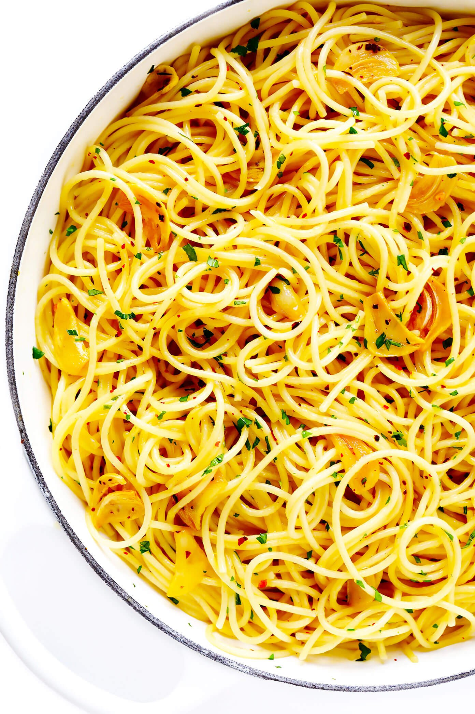

Aglio Olio

Description
A simple pasta dish with only a few Ingredients
Ingredients
- 100-150g of spaghetti or linguine
- Around half a cup of Olive Oil
- 6-8 cloves of Garlic, sliced thinly
- Red pepper flakes
- Optional: Chopped parsley and some Parmesan
- Salt and pepper to taste
Steps
- Cook the pasta according to the instructions, but take it out a minute earlier
- In a skillet, put the olive oil in and heat up to medium
- Add in the garlic slices and cook until lightly browned, add the pepper flakes as well if you wanted it to be hotter
- Add the cooked spaghetti and toss, cook for about a minute
- You can add chopped parsley at this point
- Enjoy your pasta!